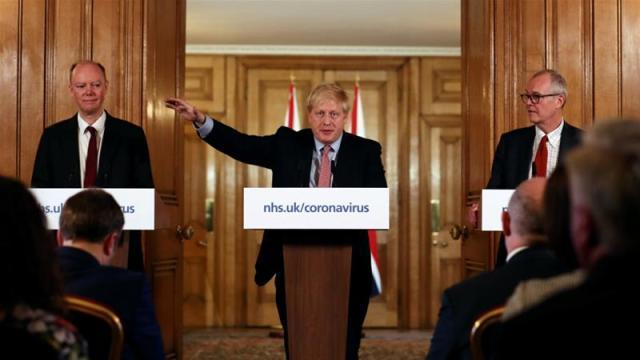
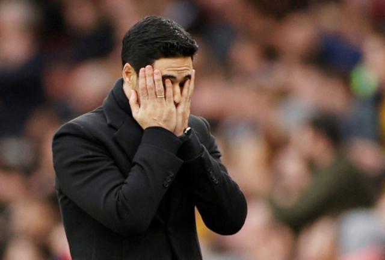

意大利疫情日记⑩：战争与和平
原文链接 备份链接 体坛周报全媒体驻意大利记者 王勤伯 （一） 我知道你们看到题目，会立即去联想，抗疫就是一场战争。 这不，英国疯子首相约翰逊推出了“牧群免疫”方案，俨然一副大敌当前的模样，希望让自己成为“新冠丘吉尔”，带着自我牺牲的大无 …
体坛周报全媒体记者 刘川发自伦敦
我还清楚地记得2月23日，阿森纳主场对阵埃弗顿，赛前看着全场的6万余名球迷陆续就坐，一位同事和我感慨：“难以想象在亚洲那么严重的情况下，我们这边还会有这样的景象。”然而仅仅在四五天之后，我就开始隐隐感到英国的疫情正急转直下，快速走向失控的边缘。

咳嗽，不戴口罩，手乱摸
2月27日是周四，阿森纳在欧联杯主场对阵奥林匹亚科斯，有一些记者前两天刚跟完那不勒斯的欧冠比赛，从意大利飞回伦敦报道这场比赛。人们依旧以置身事外的态度谈论着意大利那边正在发生的事情，而我在媒体席的邻座，一位中年记者在比赛上半场一直咳嗽不断。和大部分英国人一样，他不可能戴口罩，重咳的时候以手掩口，正是这边卫生部门严厉警告的做法，因为这很有可能通过握手，或者对其他公共区域的碰触，造成大面积传播。而他轻咳的时候甚至没有任何遮掩，最后总是以拖着长音的清嗓子声划上休止符。随后，又开始新一轮轻重缓急相间的咳嗽变奏。
而在上半场开场不久，我在电子邮箱里也收到了俱乐部的健康问卷调查表，参加一周之后俱乐部日所有活动的工作人员和访客都必须如实填写，俱乐部也在所有机构的前台，为访客设置了免洗消毒液。然而伴随着耳畔传来的愈演愈烈的咳嗽奏鸣曲，再看着问卷表格症状那一栏“咳嗽”的选项，我在中场休息结束后选择留在了媒体中心继续工作。
当然隔壁的这位记者可能和时下的疫情并没有任何关系，但是在已经进入社区传播的英国，你会发现平时有较强防护意识的，终究只是极一小部分人。一周后对阵西汉姆的比赛，在洗手间频繁洗手的人的确是多了，但是从媒体中心通向文字席的那扇大门，所有人都在触碰门上的金属把手。中场休息的时候，我在媒体中心的角落里默默地注视着这上百位同行，结果在不到两分钟的时间里，看到至少二三十号人在碰到把手之后，都有过无意识触摸自己眼鼻口的动作。那一刻，我突然有一种预感，英超疫情的爆发，可能远比我们想象的更快。

首相建议英超照常比赛
奥林匹亚科斯的老板在一周后传来被确诊的消息，不少赛后和他有过接触的阿森纳球员被隔离，这直接导致了周中做客曼城的比赛延期。而在上周三凌晨这一决定公布之时，谁也不会想到，这只是一切的开始。上周四晚上英超方面刚刚宣布周末的联赛照常进行，阿森纳主帅阿尔特塔在之后不到一小时确诊，连锁效应随即形成，第二天一早陆续有7支英超球队受疫情波及，英超方面随即和足总和英格兰联赛方宣布所有赛事暂停到4月初。
英超上周四的那纸“照常营业”的指令，和英国首相约翰逊当天下午在发布会上爆出的“群体免疫”理论有着直接的关系。英超的这则声明只有短短三段，但是其中有意无意地强调，这是遵从当天下午政府对疫情状况的更新所做出的决定，并且搬出了首相本人：“首相建议所有的体育赛事在现阶段应该如常进行。”只不过这则生效时间不到一小时就被撤回的声明，在很大程度上也折射出英国未来几个月的防疫现实。

“群体免疫”理论靠谱吗？
所谓的“群体免疫”，需要让60%的民众在接触或感染病毒之后产生抗体，从而逐步遏制病毒传播的速度和效率，让它逐渐变成普通流感的一种。这终究只是一种理论，其依据是所谓的数据建模，而意大利现在的惨像就在眼前，提出这一理论的人有没有想到一旦伦敦沦为类似的场景，他这套理论是否会迅速被民众唾弃，被政府扔进废纸堆，成为英国有史以来代价最为沉重的一个拙劣的笑话？从约翰逊一如既往的癫狂表现来看，大概率他们并没有想过这么多，就把这则听上去耸人听闻的方案奉为最优解。
英超上周四那则短命的“照常营业通知书”，在某种程度上折射出了“群体免疫”的未来。当重症和死亡人数开始逼近峰值之际，以约翰逊为首的英国政府不可能扛住来自外界的压力，他们会和英超一样：在拖到第二天将近中午的时候，才草草做出联赛暂停的决定。只是那个时候，他们不会像英超那么幸运，仅仅需要面对几个轻症的球员和教练患者。等到英国政府回到已经被证明有效的传统防疫政策中来，前期的判断失误和进退失据，可能会让不列颠变为整个欧洲疫情最为严重和惨烈的地区。
“这是我们这一代人所遇到的最大的公共卫生危机，很多家庭可能会失去自己所爱的人。”这将是约翰逊在发布会上唯一一句没有背离事实的论断，英国人在茫然无措中就这样被推上了抗疫的战场。

原文链接 备份链接 体坛周报全媒体驻意大利记者 王勤伯 （一） 我知道你们看到题目，会立即去联想，抗疫就是一场战争。 这不，英国疯子首相约翰逊推出了“牧群免疫”方案，俨然一副大敌当前的模样，希望让自己成为“新冠丘吉尔”，带着自我牺牲的大无 …
原文链接 备份链接 体坛周报特约记者吴家驹华盛顿报道 2月3日，在通道找比尔为中国录祝福的自己，完全不会想到：37天后的NBA，会因为疫情而停摆。也想不到自己短暂的生涯，可能会以这种方式结束。 全球第一例感染者至今无从考证，进入2020年 …
原文链接 备份链接 电竞行业损失难以估量的一年。 3月9日，玩家们打开《英雄联盟》职业联赛春季赛直播间，看到两位带着硕大而显眼的口罩的解说。 “让我猜猜，这是记得和猫哥。”弹幕里玩家们这样调侃着。 作为国内最受瞩目的电竞赛事之 …
原文链接 备份链接 体坛周报全媒体驻意大利记者 陈硕麟 昨天国内的社交网络热传一个和里皮有关的段子，讲的是他在接受意大利媒体采访时对比了中意两国的防疫手段，并夸赞了中国全国上下在面对疫情时的执行力，同时还对比了一下中国足球。 查证后就可以 …
原文链接 备份链接 图片来源：视觉中国 “ NBA已经提醒各球队需要准备应急预案——仅在必要人员在场的情况下进行比赛。 ” 虎扑篮球3月7日消息，据NBA记者Shams Charania报道，消息人士透露，联盟已经向各支球队发放了备忘录， …